If your kid's room currently looks like a toy store lost a fight with a laundry basket, you are extremely not alone. The good news is you don't need a full renovation or a design degree to turn it around, you need a handful of ideas that actually survive contact with a seven-year-old.
I've put together more kids' rooms than I can count at this point, and the pattern is always the same: the spaces that work aren't the most expensive ones, they're the ones built around how kids actually use a room. Play happens on the floor. Art gets made constantly. Phases come and go fast.
Here are ten ideas that balance a little bit of imagination with a lot of real-world practicality, the kind that still looks good after a week of actual use.

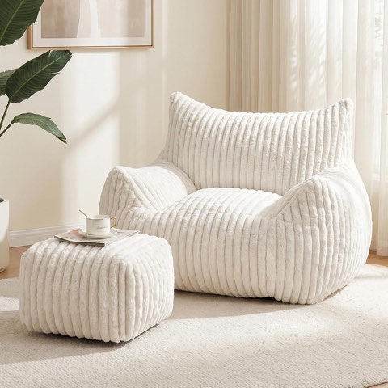
WSOFRLAC Giant Plush Bean Bag Chair with Ottoman, Cozy Fluffy Cloud Couch, White
Shop on Amazon10 Kids Room Ideas Worth Trying
1. Make Comfort the Actual Priority
It's easy to get so focused on how a kids room photographs that you forget the room also has to feel good to flop down in.
Oversized shaped cushions, clouds, stars, whatever shape they're into, a squashy bean bag, and a shaggy rug underfoot do more for how a room gets used than almost any amount of styling. A small tent or teepee corner loaded with pillows gives them a spot that's entirely their own scale.
A kid who naps in their own room instead of migrating to the couch is really the whole point of a comfort-first bedroom. Everything else is a bonus.
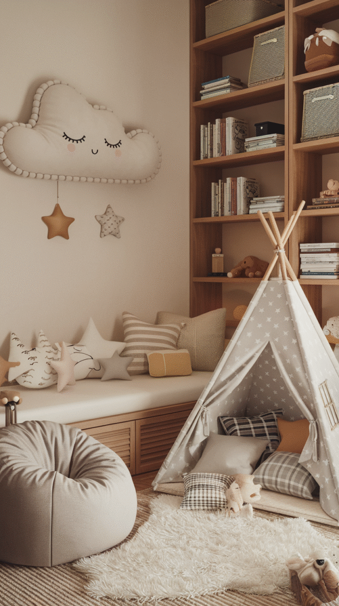


2. Go Bold, Just Not Everywhere at Once
Kids gravitate toward color, and that instinct doesn't need to be talked out of them, it just needs a frame.
Pick one or two bold hues, like a mustard and navy combination, and let them show up in bedding, curtains, and a patterned rug while the walls stay calm. Mixing in one pattern, stripes, polka dots, whatever, adds energy without tipping into visual chaos.
The walls doing the quiet work is what keeps a colorful room feeling intentional instead of accidental.
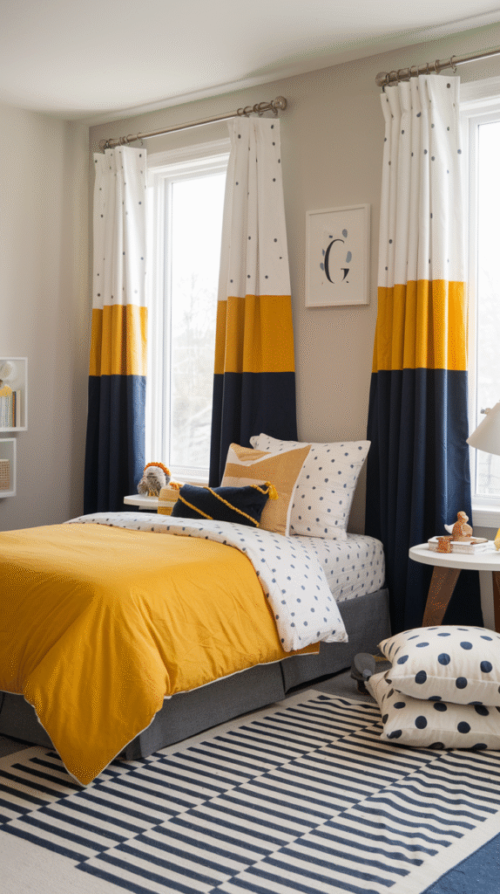
3. Don't Underestimate Lighting
Lighting gets skipped in most kids-room plans, which is a shame because it does more mood-setting work than almost anything else on this list.
A string of warm fairy lights along a headboard or bookshelf turns an ordinary bedtime into something that feels a little magical, especially paired with a soft star-shaped nightlight. A dimmable lamp handles the transition from playtime to wind-down without one harsh overhead switch.
If you want to skip climbing out of bed to kill the lights after a stalling tactic disguised as "one more story," a smart bulb you can control from your phone is worth the small upgrade.
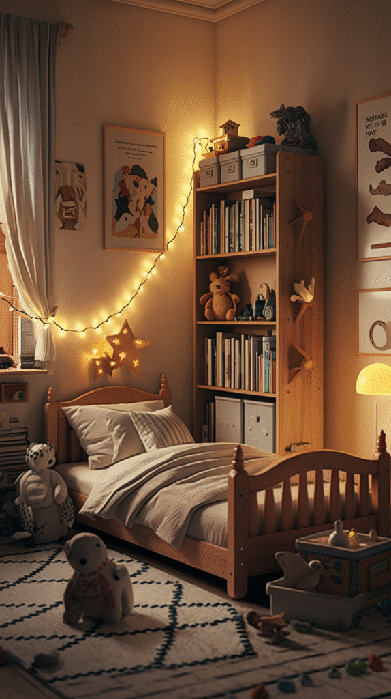

4. Display Their Art Like It Matters
Skip the expensive wall art they'll be over in six months. A rotating display costs almost nothing and updates itself as their interests do.
String a length of wire or twine along a wall and clip artwork to it with clothespins, drawings, photos, whatever they're proud of that week. Add a small shelf above for books or a few favorite objects.
It takes thirty seconds to swap a piece out, which means the display always looks current instead of like a museum exhibit from two grades ago.
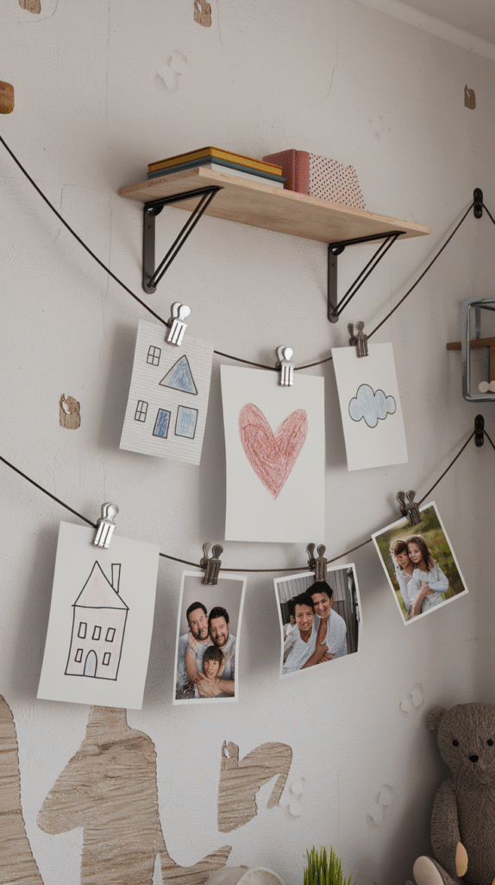
5. Split the Room Into Zones
Kids actually do better with structure, even the ones who'd insist otherwise. A room with clear zones quietly teaches organization without ever using that word.
Picture it split three ways: a sleep zone with soft bedding and warm lighting and nothing else, a play zone with open floor space and durable storage, and a study zone with a small desk and good task lighting.
Once the zones are visually distinct, kids generally know what belongs where, which means fewer snacks turning up inside the homework folder.
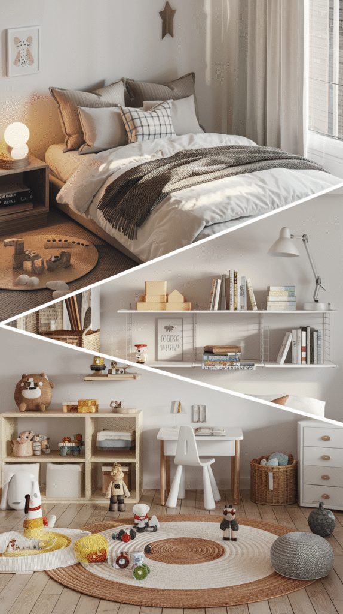
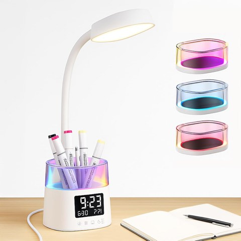
LED Desk Lamp with Pen Holder, Touch Lamp with 3 Color Modes, Eye-Caring
Shop on Amazon6. Furniture That Earns Its Square Footage
Kids accumulate things at a rate that defies physics, so the furniture needs to pull more than one job.
A bunk bed with a built-in desk and drawers underneath turns one footprint into a sleep zone, a study zone, and storage all at once. Stacked ottomans in mixed colors double as extra seating and a toy chest the second guests leave.
Before buying anything for a kid's room, I ask what else it could be doing besides the one obvious thing. Usually there's an answer.
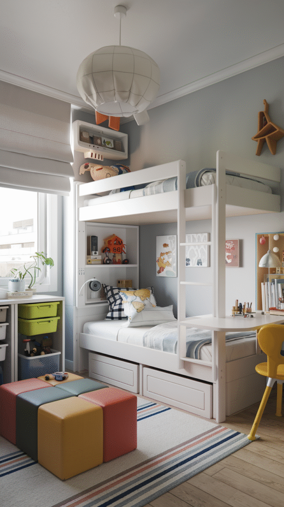
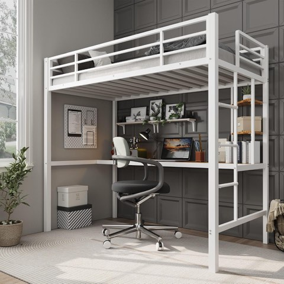
Garvee Twin Loft Bed with Large Desk and 2-Tier Shelves, White and Brown
Shop on Amazon7. Hand Them a Little Bit of Control
I get the hesitation. Handing a kid design authority over their own room sounds like a recipe for neon everything.
The fix is a guardrail, not a blank check. Narrow the paint colors down to three options you already like and let them pick. Give them full ownership of one corner, a reading nook, an art station, and leave the rest to you.
Kids take noticeably better care of a space they had a hand in shaping. That's not a parenting theory, that's just what happens when someone feels like a room is actually theirs.
8. Let Their Current Obsession Take Over (Within Reason)
Every kid has a phase. Dinosaurs, space, mermaids, whatever it is this month, it's real to them, so work with it instead of around it.
A full mural is one option, like a galaxy scene with its own rocket, planets, and a round rug that keeps the theme going underfoot. If that's more commitment than you're ready for, removable decals and a themed rug get you most of the magic without the multi-weekend paint job.
Keep the big-ticket furniture neutral and let the smaller, swappable pieces carry the theme. When the obsession shifts from rockets to something else in a year, you're not repainting a ceiling.
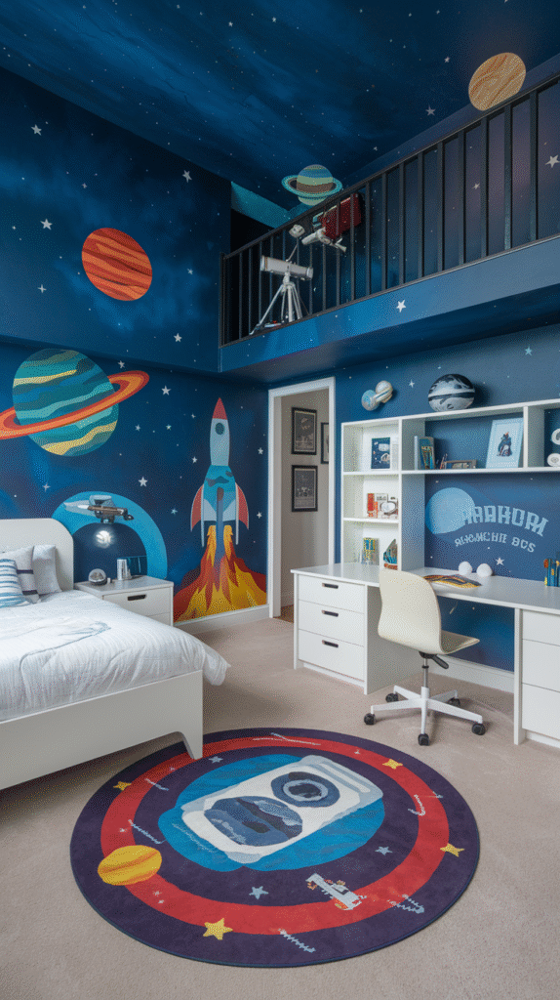
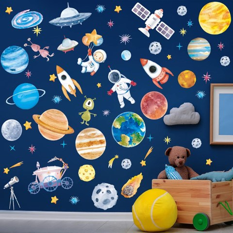
Zonon Outer Space Wall Stickers, 6 Sheets, Rocket and Planet Wall Decals
Shop on Amazon9. Storage That Doesn't Look Like Storage
Nobody wins the fight against LEGO pieces by throwing everything into one giant bin and hoping for the best.
Color-coded bins with picture labels turn sorting into something closer to a game for younger kids. Canvas bags on wall hooks handle stuffed animals and books without eating floor space, and a cluster of stacked crates in different shapes reads as decor instead of overflow.
The goal isn't owning more containers, it's giving every category of mess one specific home so cleanup has an actual endpoint.
10. Give the Walls a Job to Do
Blank walls are wasted space in a kid's room, give them something to interact with instead of just something to stare at.
A magnetic pegboard loaded with letters turns into a word game without you planning a single activity. Add a cork panel underneath for rotating their latest drawings, and a height chart decal nearby so growth spurts get documented instead of penciled onto your good doorframe.
None of this requires a renovation. It's command hooks, a sheet of pegboard, and twenty minutes on a Saturday.
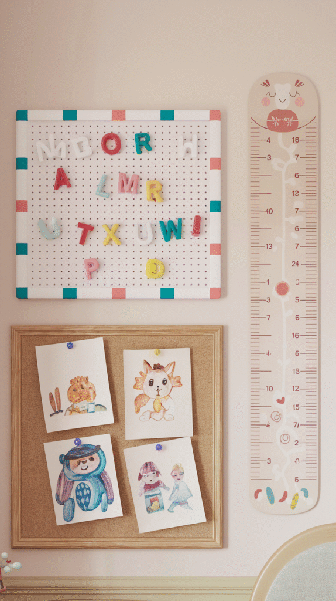
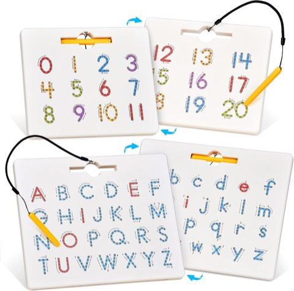
GAMENOTE Magnetic Letter and Number Board, Double Sided, ABC 123 Tracing Set
Shop on AmazonFinal Thoughts
A great kids room was never really about matching throw pillows in the first place. It's about building a space where your child genuinely feels like the room belongs to them, and where cleanup has at least a fighting chance.
The best part of these ideas is how little they actually lock you in. Swap a theme, rotate the art wall, adjust a zone as your kid grows and changes, and the bones of the room keep working without you starting from zero every single year.
Pick just one idea and start there. The rest can follow whenever you're ready for it.